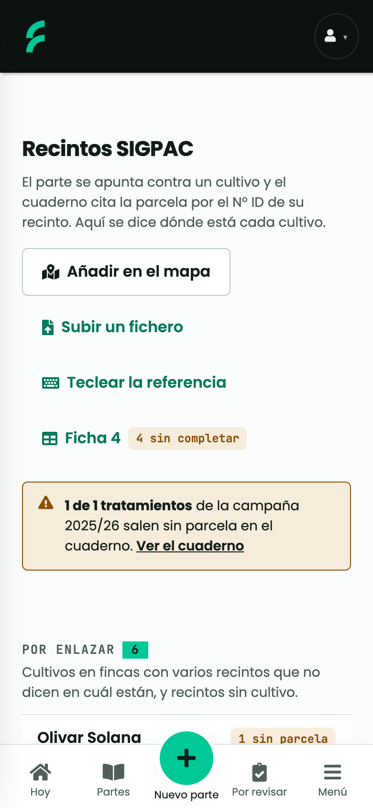
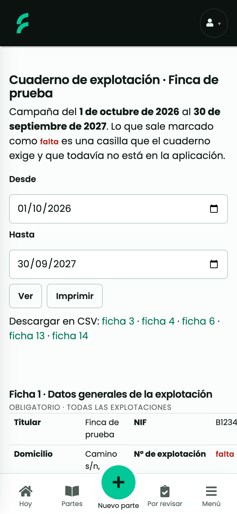

Tu primer día
Este tutorial te lleva de cero a tu primer éxito con FnF: entras con el correo de invitación, metes tus parcelas y dictas tu primer parte hablando — y lo ves en el cuaderno de explotación. En menos de una hora. Cada paso enlaza su guía completa: aquí va solo lo imprescindible para llegar al final.
Lo que necesitas
- El correo «Te invitan a [tu explotación] en FnF Analytics». El acceso es por invitación: no hay registro público. Si aún no lo tienes, en la pantalla de entrada está «solicítalo aquí».
- Las referencias de tus parcelas (las de la declaración de la PAC) o el mapa delante, para reconocerlas.
- El móvil: el dictado se hace desde él.
1. Entra con tu invitación
Abre el enlace del correo (vale 7 días): verás «Únete a [tu explotación]» con tu correo ya puesto. Rellena «Tu nombre y apellidos» y «Crea una contraseña», marca «Acepto el aviso legal y la política de privacidad» y pulsa «Crear la cuenta y entrar». Entras directamente, sin volver a escribir la contraseña, y en Inicio te saluda: «Bienvenido a FnF Analytics. Ya estás en [tu explotación]».
Todo el detalle, incluida la pantalla de entrada si aún no tienes el correo: Dar de alta tu explotación.

2. Mete tus parcelas
Tus parcelas entran como recintos SIGPAC: es la unidad con la que el cuaderno cita cada parcela, y sin ellas los tratamientos salen sin parcela. Abre «Campo → Recintos SIGPAC», pulsa «Añadir en el mapa» y toca cada parcela: el SIGPAC dice qué recinto hay ahí. Asigna la finca, pulsa «Dar de alta» y, en «Por enlazar», di qué hay plantado en cada recinto («Enlazar [cultivo]»): es lo que hace que el cuaderno sepa en qué parcela se trabajó.
Paso a paso, con el mapa, los ficheros y la ficha 4: Importar tus parcelas desde SIGPAC.

3. Dicta tu primer parte
Ahora el gesto de cada día. En el móvil, pulsa «＋ Nuevo parte» y elige «Dictar». En la hoja «Dictar un parte», pulsa «Empezar a grabar» y cuenta lo que has hecho hoy, como se lo contarías al encargado:
«He podado el olivo nuevo con Juan, de ocho a dos»
Si hoy trataste o abonaste, dicta eso («he tratado contra el repilo con el atomizador y el T4, 15 litros de Herocuper, de ocho a diez»): los tratamientos y las fertilizaciones son lo que alimenta el cuaderno.
Pulsa «Terminar» y deja que haga sus pasos («Subiendo el audio», «En cola: se procesa en unos segundos», «Pasándolo a parte»). Se abre solo «Revisar parte dictado»: una fila por dato y, arriba, lo que falta. La app no inventa nada: solo elige entre lo dado de alta, y lo que no encaja te lo pregunta. Revísalo y pulsa «Guardar parte»: sin ese botón no hay parte.
Estados de «Por revisar», dictados sin cobertura y todo lo demás: Dictar un parte por voz.

4. Míralo en el cuaderno
Abre «Partes»: tu parte está ahí, con la marca «Dictado». Y abre «Campo → Cuaderno de explotación»: si dictaste un tratamiento, ya está en la ficha 6 (actuaciones fitosanitarias); si fue una fertilización, en la 13. Y si fue otra labor, no te preocupes: los partes de labor viven en «Partes»; el cuaderno recoge los tratamientos y las fertilizaciones.
El mismo cuaderno marca en rojo lo que le falta: esa es tu lista de pendientes para los próximos días. Cuando la campaña esté apuntada, el siguiente éxito es presentarlo: Exportar el cuaderno a SIEX.

Tu progreso
- Entraste con el enlace de la invitación y tienes tu cuenta
- Tus parcelas están en «Recintos SIGPAC», enlazadas con su cultivo
- Dictaste un parte, lo revisaste y pulsaste «Guardar parte»
- Lo viste en «Partes» con la marca «Dictado» — y en el cuaderno, si fue un tratamiento o una fertilización
Cuando metas al equipo en FnF, pásales Tu primer parte en 2 minutos: es el tutorial de quien apunta los partes en el campo. Y para presentar el cuaderno, sigue con Tu primer SIEX.